홈 › 현관중문 시공사례
인덕원센트럴자이 106동 32평
정대칭 양방향 여닫이 현관중문
이번 현장은 현관 입구 폭이 넓어 그 장점을 그대로 살렸습니다. 좌우 문짝을 같은 비율로 구성한 정대칭 양개 디자인으로 균형감 있는 정면을 만들고, 양방향 여닫이 방식으로 편리한 출입 동선을 확보했습니다.
현장 : 인덕원센트럴자이 106동 32평
중문 형태 : 정대칭 양개 현관중문
개폐 방식 : 양방향 여닫이
프레임 : 화이트톤
특징 : 넓은 현관 폭을 활용한 좌우 정대칭 구성
넓은 현관일수록 살아나는 정대칭의 균형감
현관 폭이 넓은 집은 중문을 한쪽으로 치우치게 구성하기보다 공간 조건에 따라 좌우 문짝의 비율을 동일하게 맞추면 정면에서 보았을 때 안정적이고 단정한 인상을 만들 수 있습니다. 이번 106동 32평 현장은 충분한 폭을 활용할 수 있어 정대칭 양개형으로 구성했습니다.
두 문짝을 함께 열면 넓은 개방감을 활용할 수 있고, 평소에는 필요한 문짝만 열어 출입할 수 있습니다. 양방향 여닫이 방식이라 현관에서 실내로 들어올 때와 실내에서 현관으로 나갈 때 모두 자연스러운 동선을 만들 수 있다는 점도 장점입니다.
화이트톤 프레임과 넓은 유리 면은 기존 밝은 실내와 자연스럽게 이어지면서, 큰 중문이 공간을 무겁게 막아 보이지 않도록 구성했습니다. 중문은 같은 평형이라도 현관 폭과 구조가 다르기 때문에 정대칭과 비대칭 중 어떤 구성이 더 좋은지는 실제 현장 조건을 보고 결정하는 것이 중요합니다.
시공 전·후 사진
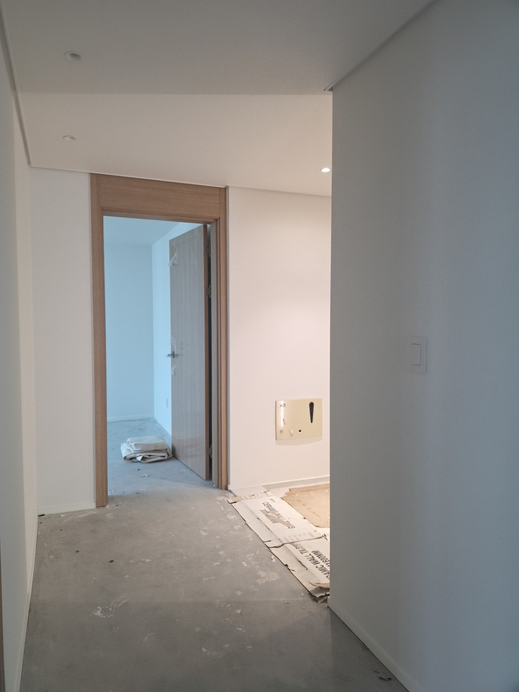
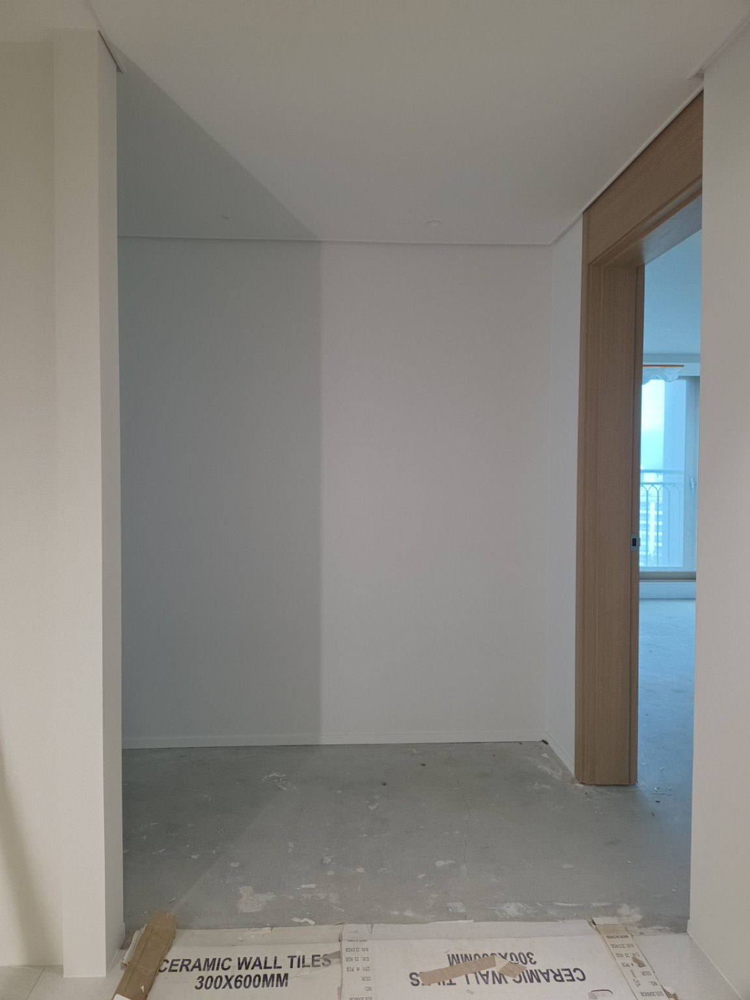
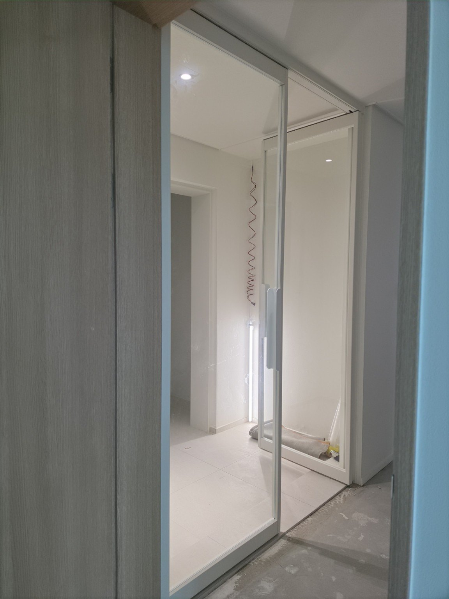
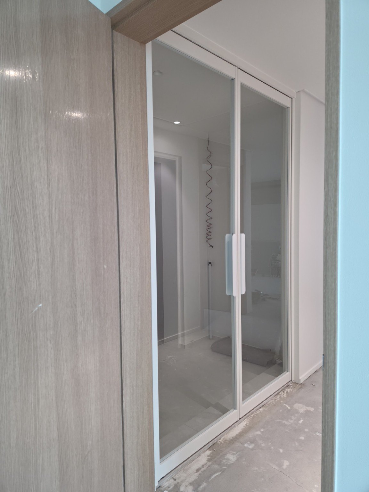
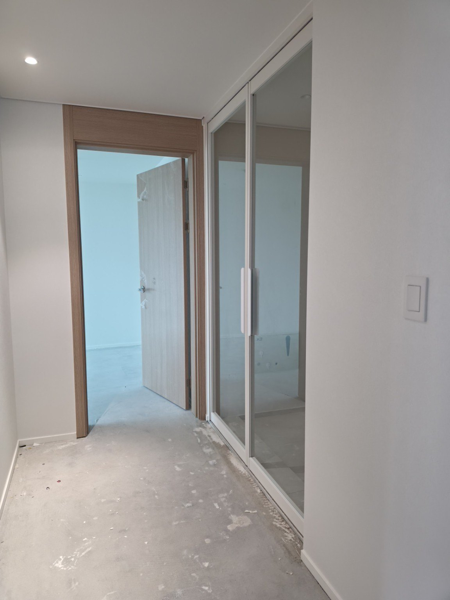
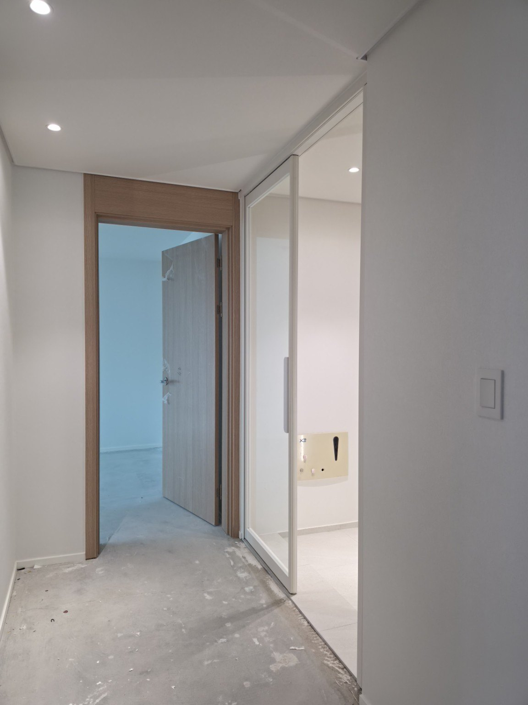
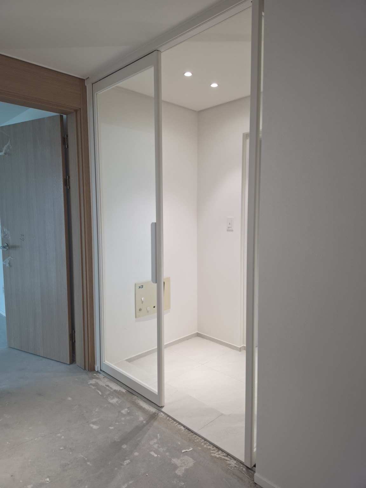
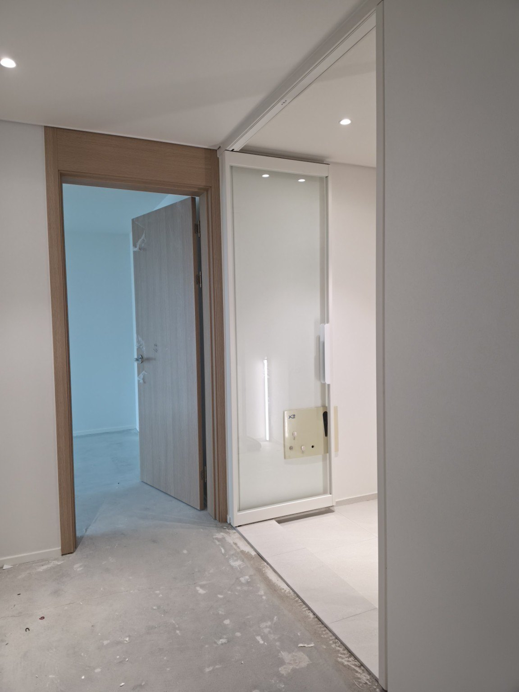
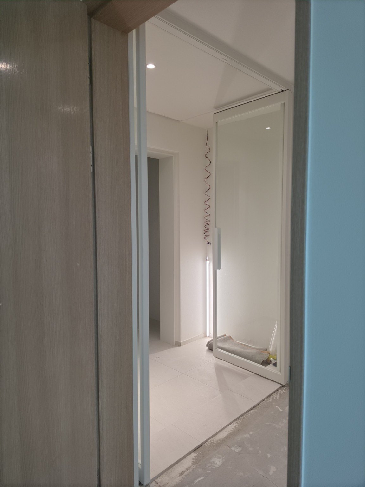
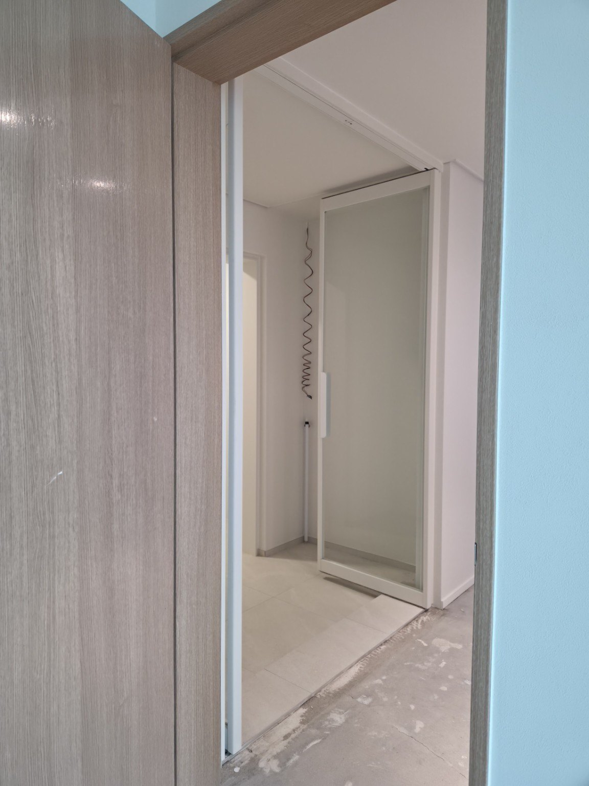
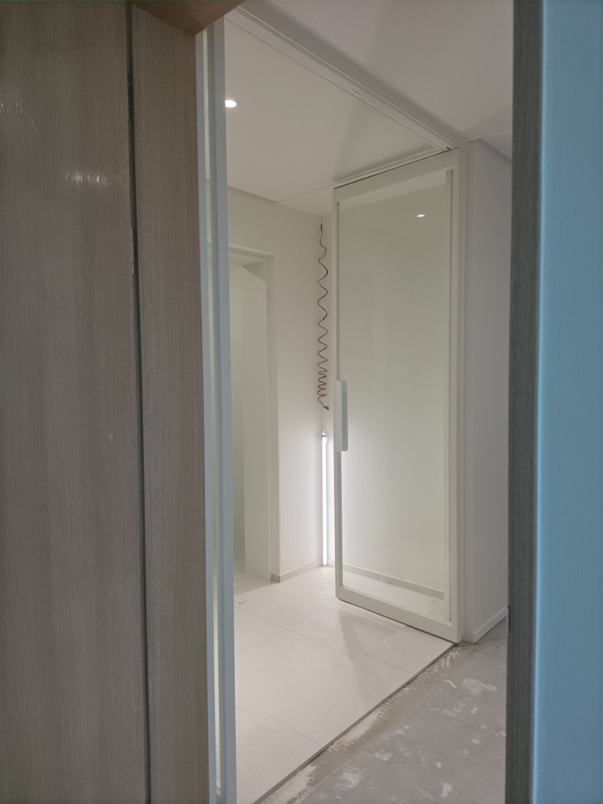
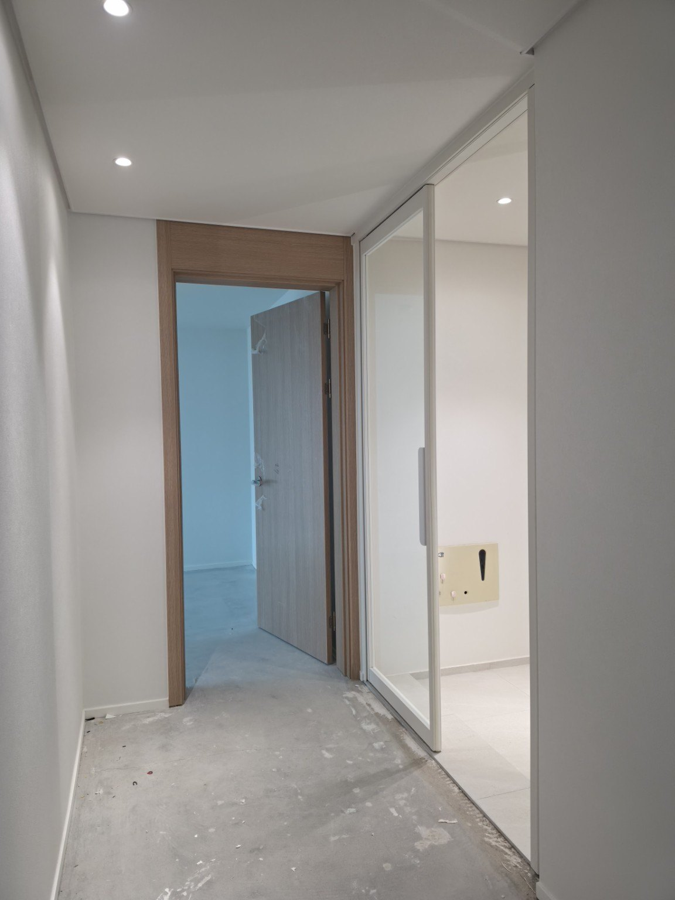
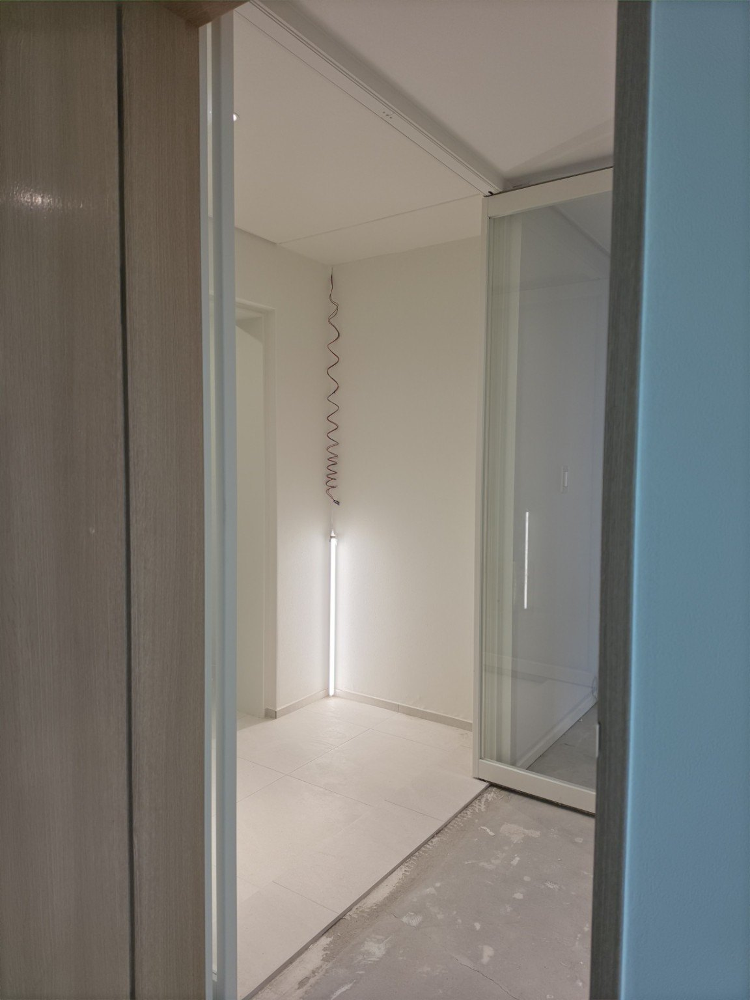
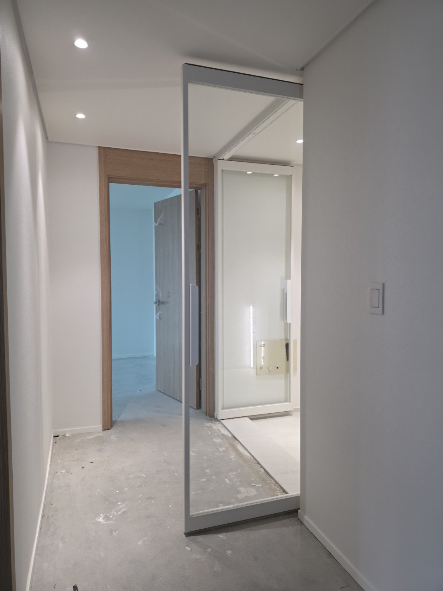

묻고 답하기
Q. 인덕원센트럴자이 106동 32평에는 어떤 중문을 시공했나요?
A. 현관 폭이 넓은 구조를 활용해 좌우 문짝 크기를 같은 비율로 맞춘 정대칭 양개형 양방향 여닫이 중문을 시공했습니다.
Q. 현관이 넓으면 왜 정대칭 양개 중문이 잘 어울리나요?
A. 충분한 폭을 좌우에 균형 있게 나누면 중문 전체 비례가 안정적으로 보이고, 두 문을 열었을 때 넓은 출입 폭을 활용하기 좋습니다.
Q. 양방향 여닫이는 어떤 점이 편리한가요?
A. 현관 쪽과 실내 쪽 양쪽 방향으로 열 수 있어 들어오고 나가는 방향에 맞춰 자연스럽게 사용할 수 있습니다.
Q. 좁은 현관에도 정대칭 양개형이 좋은가요?
A. 반드시 그렇지는 않습니다. 현관 폭이 좁거나 신발장·벽체 위치에 제약이 있으면 비대칭 양개형이나 다른 중문 방식이 더 적합할 수 있습니다.
Q. 정대칭과 비대칭은 어떻게 결정하나요?
A. 전체 현관 폭, 실제 통행 폭, 신발장과 벽체 위치, 문이 열리는 동선을 확인한 뒤 결정합니다. 문다라는 현장 구조에 맞춰 문짝 비율과 개폐 구성을 맞춤 제작합니다.
현관중문 제작·시공 상담
문다라는 2003년부터 현관중문을 직접 제작·시공해 왔습니다. 현관 폭과 생활 동선을 확인해 정대칭·비대칭 등 현장에 맞는 구성을 상담해드립니다.
전화 상담 010-2432-1107